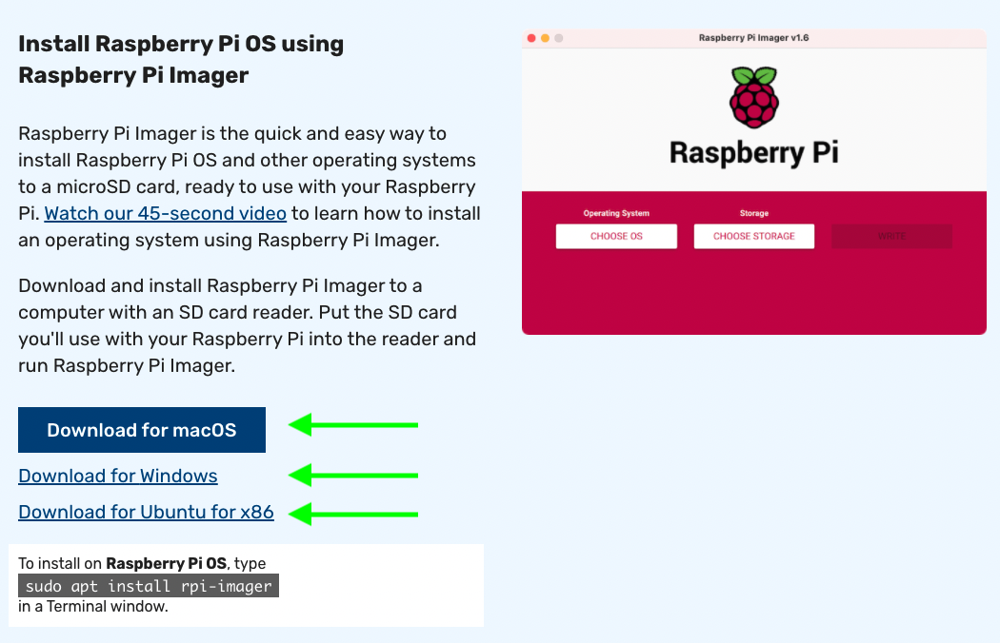

Packetwall: for Classrooms
Hands-on Network Analysis
This workshop implements knowledge of Wireshark, Bash scripting, Electronics and Networking in one project.
Participants will build a device that detects and notifies when certain packets are found. This project will help participants understand Network Analysis in a different form.
Required Parts (~$70/student):
Raspberry Pi 4 2GB ($35)
REXQualis Electronics Basic Kit ($14.49)
TP-Link USB3 to Ethernet Adapter ($12.99)
32GB MicroSD card ($7.49)
A laptop or desktop with Wi-Fi
Any device with an Ethernet jack
Step 1: Install the OS
Step 1a: Install Raspberry Pi OS
Raspberry Pi OS is easily installed using the Raspberry Pi Imager. This free software will help students prepare their microSD cards for use with the Pi.

Once the small program is installed, you can insert the microSD into the system, ensure the OS can see the card and then open the program. Click on "Choose OS" and then select "Raspberry Pi OS (other).

Select the "Raspberry Pi OS Lite (32 bit)" option.
Choose the proper storage location (mine was easy to locate)
Click on "Write" to start the formatting process. This will take a couple of minutes to complete.
 Formatting complete
Formatting complete
Step 1b: Enable SSH
Before we put the microSD card in the Pi, we need to enable SSH to interact with it, since we will not be using a mouse or keyboard. Here are the steps to enable SSH on various OS's:
All Unix based OS
1. Mount the boot partition and in the Terminal, change directory to that partition.
2. Type: touch ssh in order to create a blank file called ssh in the boot directory.
3. It is ok to unmount the drive and connect it to your Pi.
Windows
1. Mount the boot partition and in the Command Prompt, change directory to that partition.
2. Type: type nul >> "ssh" in order to create a blank file called ssh in the boot directory.
3. It is ok to unmount the drive and connect it to your Pi.
Step 2: Configuring the Pi
Step 2a: Connect and Update
Boot the Pi normally, waiting for it to get an IP address from its primary NIC. Connect to the Pi at its IP address using Terminal or Command prompt as follows:
ssh pi@xxx.xxx.xxx.xxx (the default password is raspberry)
Once logged in, we will proceed to update the OS by typing sudo apt update && sudo apt full-upgrade -y. This will take some time depending on Internet speed and the amount of updates to install.
With the updates complete, we will proceed to install the the necessary software, tshark and termshark.
Step 2b: Installing Software
Tshark can be installed by typing sudo apt install tshark -y
At this prompt, select "No"
Termshark can be downloaded from GitHub. Go to Termshark's GitHub page and click on "Releases."
Scroll down to the "Assets" section and right click select "Copy Link Address" on the armv6 option.
Type wget and then paste the link from the GitHub page onto the terminal. We can also unzip the file immediately after if we use the following command:
wget https://github.com/gcla/termshark/releases/download/v2.2.0/termshark_2.2.0_linux_armv6.tar.gz && tar -xvzf termshark_2.2.0_linux_armv6.tar.gz
Step 3: Configure Packetwall Software
bridge usb and reconnect from wifi, start capture for 2 GB
Step 4: Connect LEDs
look over capture, fine tune packetwall bash settings, repeat until desired filters are used.